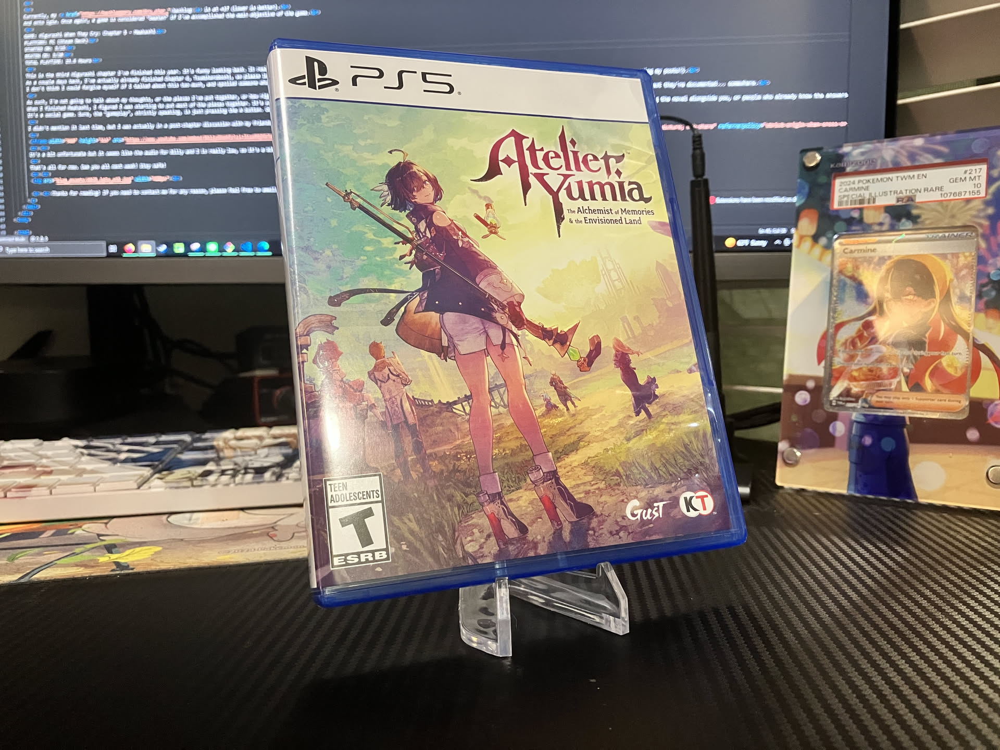

1game1week - Week 16 (4/16/25) - Atelier Yumia: The Alchemist of Memories and the Envisioned Land
Hey all! It's week 16! (4/16 -> 4/23)
I don't really have any real-life updates. I'm trying to start saving money, because I'd like to go to Japan next year, so hopefully I'll be better than I have been previously about getting new games.
Actually, I haven't really bought anything in April, only 'received'. Being preorders, or 'I ordered this the last day of March and it got here early April'.
Maybe I'm doing better. I'll try my best, so please clown me if I buy too many games. Trying to do one per paycheck... that should be enough, right?
We'll see how it all turns out.
New games from 4/9 -> 4/15:
* Venus Vacation PRISM - DEAD OR ALIVE Xtreme (PS5)
Currently, my backlog is at +16 (lower is better).
And onto 1g1w. Once again, a game is considered "beaten" if I've accomplished the main objective of the game.
GAME: Atelier Yumia: The Alchemist of Memories and the Envisioned Land
PLATFORM: PS5
STARTED ON: 3/21
BEATEN ON: 3/26
TOTAL PLAYTIME: 51.83 Hours (51:49)
So...
I really wish I had written this when the game was fresh on my mind. It's been 20ish days since I beat the game, so while I still remember my overall sentiment it's not a detailed thing.
As always, I will not be spoiling any part of the game. My only concern here is the overall experience 'playing' the game.
A term I've seen thrown around a lot is 'open world fatigue'. It's pretty self-explanatory, but a lot of games these days have huge, vast open worlds for the player to explore... but since everyone is doing it, it becomes a tiresome task to navigate all these worlds, leading to fatigue.
Although I don't play many open world games... Maybe it applies here, anyway. The biggest thing that stuck out to me is that Atelier, as a series, might have lost its 'special sauce' and traded it for this.
Something that made it really special, in my opinion, was having endings depending on your performance, and making you take conscious actions with a time limit in mind. This is the case for most of the Atelier games I've played barring Ryza, which didn't have a time limit.
The core was simple: there are unique ingredients to gather at specific locations in the map. Gatting to those locations takes in-game days, and you have X amount of years before your time limit is up, so everything you do has to be planned in advance to achieve your goals.
Personally, I think the aforementioned model was really fun. There's an inherent cost to everything you do. It's like playing two games: one is a turn-based RPG with exploration and colorful enemies, the other is a time-management game.
Let's shift to Yumia, and compare what we have and what we no longer have: ingredients are, for the most part, no longer unique to specific locations in the map. Even then, there's really no point in them being unique- there's no travel time. Even if I needed an ingredient that actually *was* exclusive to a part of the map, I could just fast travel, get what I need, and move on.
This takes away the time-management aspect. Your actions don't have consequences, so you're free to go about doing anything willy-nilly. This has been the case since the Ryza series, and while it bugs me a bit, it's the result of Atelier shifting to having an overarching narrative and a set ending. However, at least in Ryza, gathering areas were a bit more defined. Since this is open world, there's really no divide.
Second comes the turn-based RPG aspect which is no longer there. There's no turn system, there's no time-cards. The battle system was 'revamped' into becoming a pseudo-action RPG. Unfortunately, it really boils down to beat your face on your controller and win. Your opponent will occasionally try to hit you, but hits are incredibly telegraphed, so you can roll away, lagless, and continue mashing your face on your controller.
The combination of these two factors make Yumia, in my opinion, very bland, gameplaywise.
Okay, I've complained enough about things that I miss from other Atelier games. What's some things specific to Yumia that are interesting?
I've mentioned the open-world aspect. Really, it is quite big... Honestly, I think it might be 'too' big. Exploration becomes a drag after a while, because the areas feel as if they lack identity. There's a central theme to an area- but that's about it. Everything else feels about the same. Wherever you look, it feels as if I'm looking at the same thing, regardless of where I am.
With older games, I'd think 'oh, I remember this spot, this is where...', which just didn't seem like a thing to me in Yumia. There were a lot of spots, and after 50 hours I started just about remembering some of them, but 'less is more', when something needs to be memorable.
To aid in exploration of this open world, there are quite a few devices, but the one that comes to mind for me to complain are zip-lines. I don't care about the zip-lines themselves, what really annoyed me were the 'connect the circuit' puzzles. You have a 4x4 square, with 16 tiles you can move around to make it so every line is connected. It's something you can do in a few seconds... but those add up, and it gets really silly after a while. Yes, game... I can connect lines.
As I was typing that, I remembered there was a Simon Says mini puzzle deeper into the game. I remember being really annoyed by it. I just want to open this door and continue exploring, and you're making me play a grade-school minigame multiple times. There's been plenty of minigames in Atelier, but I don't think any have been as 'simple' as these. Even the 'jump to dodge the apples' minigame from Marie had a lot more soul than this.
These two especially just grinded my gears. There was no skill, no thought, no risk, nothing. They were not minigames. They were impediments. They stood in your way simply to be a time sink.
The game's main 'thing' is exploration, you'd think that's really polished, right?
Well... about a quarter into the game, you're given a motorcycle to aid in exploring the Aladissian Empire. The problem is that most of the areas aren't built for a motorcycle. Paths are broken. Enemies are littered throughout, so you're stopping all the time. To do certain tasks, you have to dismount. A lot of the time, even riding around will be impeded due to a collision bug stopping you on your tracks (this can be seen most in stairs).
Since it is an open world, there's also very vague lines on what you "can" explore and what you "cannot". Even if something seems to be reachable, it might just not be. In the third area in the game, to the north, I remember trying to get to a specific spot where the map grew, like an idiot, for half an hour, only to give up because I could not get past an invisible wall. Two hours later, I'm told 'hey, this spot is actually unlocked via a quest where a party member magically breaks these rocks.' Awesome.
In the same area, there was also a spot that was fully explorable, you can get to it with normal jumps, without abusing anything, that just clips you out of bounds. I was following the map, and just fell through the floor. Once again, I tried for a little while to figure out how to go where I wanted to go, only to be told 'oh, it's actually under you.' Great.
You can have an open-world game all you want- the problem comes with not properly defining the point where the open world ends.
This also points out: the map in this game is terrible. Points of interest aren't properly marked in both the minimap or the actual map. It's one or the other, never both. Topography is nonexistant. I can't tell where something is. Is it in the floor above? Below? Is it actually right on top of me? Am I stupid?
It's also worth noting that there's a few glitches here and there that dragged down the experience. They range from funny to 'what the hell', but shouldn't be much going on. I ran into a wall and clip under the floor. I finished a quest point and was warped to a random coordinate that made me fall endlessly. Sometimes, toggling icons in the map crashed the game. Sometimes characters fail to appear in battle.
Finally: alchemy. The core of Atelier. The big guy... is made completely optional as there's now a 'do it for me!' button.
Even doing it manually requires so little thought that I found it really depressing. You put the square peg in the square slot. You can just use the materials that have the big number. Big number good. Even Ryza had a more in-depth alchemy system than this, so I was really bummed out.
Additionally, unlocking recipes now requires grinding for memory vials (if I'm remembering the name correctly). I'm spending 50 hours in your world. I don't think I should have to grind MORE. I spent probably a good hour or so grinding enough, just so I could unlock a few of them.
Same thing with the skill tree. I abused reforging for two hours, mindlessly putting one new element every time I reforged, just to farm SP for the skill tree. I don't want to have to do this. For context- this was the very last thing I did. I'd cleared all the maps, done all the quests, done all the research. I did not care to grind at the very end.
All of this makes Atelier Yumia a game I'm not entirely happy with, but that's not to say I hate it. I hate that it wants to be something it is not. Not every game has to be Tears of the Kingdom or Xenoblade- it's okay to be Atelier. It's okay to have quirky, silly characters with exaggerated tropes. It's okay for the main character to be a total loser, or a klutz, or a pie-obsessed foodie.
As much as I've complained today (and this is a while after the experience simmered- imagine if I had written this when I beat it, lol), Yumia is still a fun game. My misgivings with exploration are dwarfed by how much fun I had exploring every nook and cranny, even if I don't remember all of it. I didn't use the bike too often, so issues didn't present themselves too frequently.
Finding paths, and secret places, made the experience fun. The narrative was really interesting and a bit less whimsical than the normal Atelier ones (might be good or bad, depending on who you ask- if you ask me, it depends on the day of the week. Sometimes I'll say 'Atelier is care-free!'). While combat was incredibly simple, it could be made a little bit less of a drag by changing the way you play, since all characters are different, skills change, etc.
I realize not everyone may be following: in some other peoples' terms, this might be equivalent of Nintendo saying, "Let's make Animal Crossing, Minecraft!". In theory, it's good, and the game is probably good- it's just not what you came here for, and the things you 'did' come here for suffer because of it..
I promise you- I would not have dumped those many hours into something I wasn't enjoying. The game has, in theory, really good bones: it just falls flat on its face when compared to what has come before because it fails to be itself. In a vacuum: Atelier Yumia is a well-crafted open-world adventure game with an engaging narrative and unique elements for an open-world game, such as alchemy. As an Atelier game, though... at least it has cute girls!
I believe I've yapped enough for now. See you all next week! Stay safe!

Thanks for reading! If you need to contact me for any reason, please feel free to email me at aru@hoshikawa-aru.com.